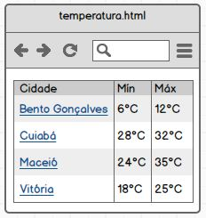

Exercício 2: Atualmente, existem vários sites que exibem a temperatura atual
e previsão do tempo. Construa uma página HTML que exiba a tabela abaixo, onde
ao clicar no nome da cidade, o usuário seja encaminhado a um site com os dados
da previsão do tempo para a determinada cidade.
